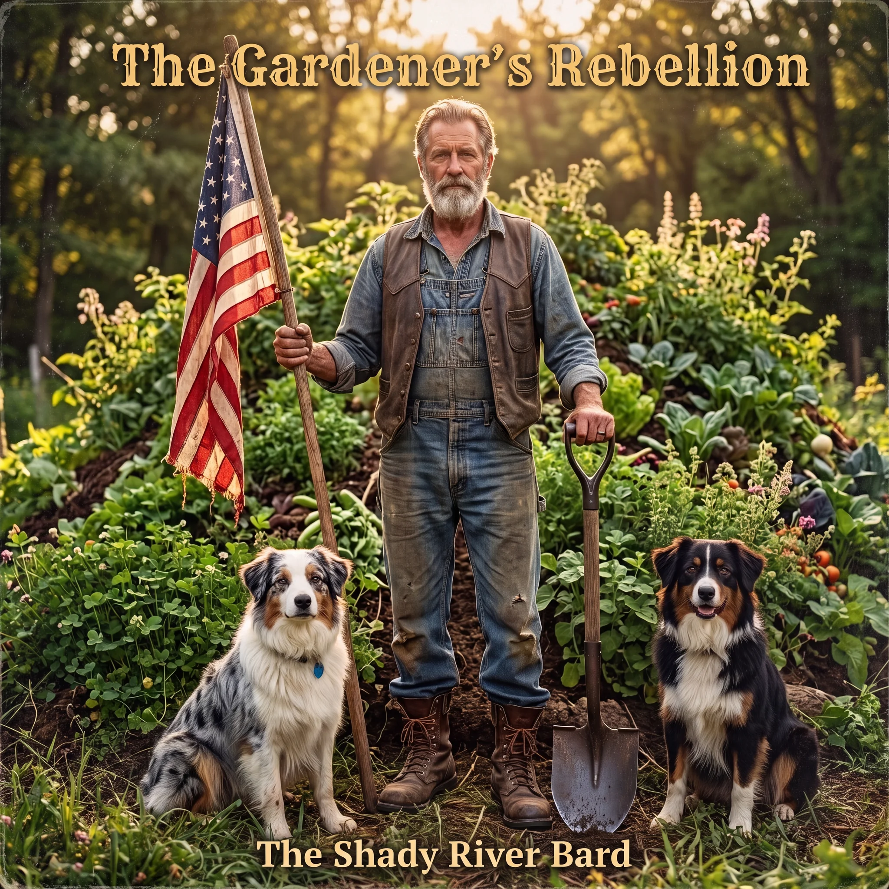
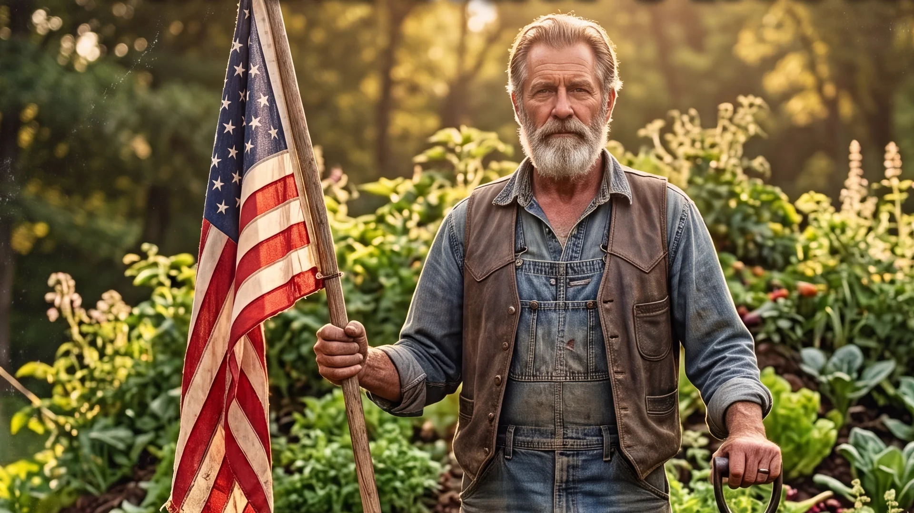

THE GARDENER’S REBELLION
A definitive 12-track battle cry for the modern era, charting the journey of a single protagonist—the Gardener (who is also the Bard)—confronting a rigged, extractive system. Moving from the stark realization of systemic political capture and the tragedy of neighbors taught to hate one another by algorithmic news feeds, to the radical empowerment of unplugging the glowing screen, picking up a forged steel shovel, stocking the local food bank and community pantry, and wielding unvarnished acoustic songwriting as an unstoppable weapon of truth.

The Resistance Jukebox
Stream the complete 12-track album cycle with pure literary lyrics, permaculture defiance theory, and song narrative essays.
1. The Architect's Blueprint (Spoken Word)
The systematic orchestration of working-class division is an elite strategy to prevent solidarity. Pitting demographics against each other horizontally distracts the populace from looking upward at wealth extraction.
A chilling scene-setting spoken-word prologue laying out the schematic of manufactured fear: a system that deliberately pits the college town against the factory floor to prevent working-class solidarity.
Thematic Exhibits: Anatomy of the Rebellion
Explore the four foundational pillars connecting systemic political capture, algorithmic polarization, permaculture subversion, and unmasked acoustic solidarity.
Exhibit I: The Corrupt Apparatus & The Brass Ballot
The modern political and economic machinery has been fundamentally captured by concentrated corporate power and elite financial interest. The electoral process has been reduced to high-stakes political theater where two corporate-backed factions offer the illusion of choice while serving identical donor class agendas.
The working populace is left trapped between manufactured partisan rage and crushing political apathy. The protagonist's journey begins with the realization that genuine change will never emerge from the corrupt apparatus of state power, requiring a total redirection of human energy toward local self-determination.

Thematic Elements & Strategic Architecture
A comprehensive matrix mapping the four core systemic causes, cultural manifestations, and grass-roots resistance vectors articulated across the album.